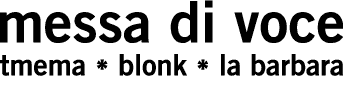

An Audiovisual Performance & Installation
for Voice and Interactive
Media
by Golan Levin
and Zach Lieberman
with Jaap Blonk and Joan
La Barbara
Created Summer 2003 |
| Contents.
Overview
Background
Video Documentation
Photo Documentation
Exhibition History
Press and Reviews
Artist Biographies
Acknowledgements
Project Sponsors
Technical
Requirements
Contact & Inquiries
Links
& References
A Final Project Report for Messa di Voce
has four components:
 Final Project Report for Messa di Voce (5Mb).
Final Project Report for Messa di Voce (5Mb). -
Technical Paper (16Mb). “In-Situ Speech Visualization in Real-Time Interactive Installation and Performance.”
-
Color Plates (20Mb).
-
Press Clippings and Reviews (6Mb).
| |
Overview.
Messa di Voce (Ital., "placing the voice")
is an audiovisual performance in which the speech, shouts and songs produced by
two abstract vocalists are radically augmented in real-time by custom interactive
visualization software. The performance touches on themes of abstract communication,
synaesthetic relationships, cartoon language, and writing and scoring systems,
within the context of a sophisticated, playful, and virtuosic audiovisual narrative.
Tmema's software transforms every vocal nuance into correspondingly complex,
subtly differentiated and highly expressive graphics. These visuals not only depict
the singers' voices, but also serve as controls for their acoustic playback. While
the voice-generated graphics thus become an instrument which the singers can perform,
body-based manipulations of these graphics additionally replay the sounds of the
singers' voices — thus creating a cycle of interaction that fully integrates the
performers into an ambience consisting of sound, virtual objects and real-time
processing.
Messa di Voce lies at an intersection of human and
technological performance extremes, melding the unpredictable spontaneity and
extended vocal techniques of two master composer-improvisers with the latest in
computer vision and speech analysis technologies. Utterly wordless, yet profoundly
verbal, Messa di Voce is designed to provoke questions about the meaning
and effects of speech sounds, speech acts, and the immersive environment of language.
An installation version of Messa
di Voce makes select software from the performance available for public play.
| |
Background.
Messa di Voce, like our previous augmented-reality
artworks RE:MARK
and Hidden Worlds of
Noise and Voice, is concerned with the poetic implications of making the
human voice visible. In Messa di Voce, the core technology which makes
this possible is a custom software system which integrates real-time computer
vision and speech analysis algorithms. Specifically, a computer uses a video camera
in order to track the locations of the performers' heads. This computer also analyses
the audio signals coming from the performers' microphones. In response, the computer
displays various kinds of visualizations on a projection screen behind the performers;
these visualizations are synthesized in ways which are tightly coupled to the
sounds spoken and sung by the performers. Owing to the head-tracking system, moreover,
these visualizations can be projected such that they appear to emerge directly
from the performers' mouths. In some of the visualizations, projected graphical
elements not only represent vocal sounds visually, but also serve as a
playable interactive interface by which the sounds they depict can be re-triggered
and manipulated by the performers.
Our group's interest in phonesthesia,
or phonetic symbolism, is at the heart of the Messa di Voce project. According
to this idea, the sounds of words tend to reflect, to some extent, associated
connotations from other perceptual domains such as shape or texture. A classic
illustration of the phonesthetic principle can be found in Wolfgang Köhler's pioneering
psychology experiment from 1927, in which he asked subjects, "which of the
figures below represents the sound maluma, and which one represents the
sound takete?" Nearly all viewers respond with the same answer — suggesting
rich research opportunities for artmaking and cognitive psychology alike.
Messa di Voce brings together findings from phonesthesia
research with our group's shared interests in abstract language, extended
vocal techniques, interactive systems, and live audiovisual performance. In our
concert, these ideas take shape in a series of twelve brief vignettes which explore
different symbolic, tactile and audiovisual aspects of phonesthetic relationships.
The entire Messa di Voce performance generally runs 30 to 40 minutes in
length. | Video
Documentation.
| Messa
di Voce: "Insect Nature Show" [16 Mb QT]
The performers adopt complementary roles: Joan,
as a peculiar kind of animal; and Jaap, as an abstract narrator. [ICA,
London. &photos] |
| Messa
di Voce: "Bounce (Jaap's Solo)" [13 Mb
QT]
Jaap emits a stream of bubbles by making a special cheek-flapping
sound. [ICA, London. &photos] |
| Messa
di Voce: "Pitchpaint"
[12Mb QT]
The performers paint bold gestures
by singing. Descending pitches curl clockwise; ascending notes curl anti-clockwise.
[ICA, London. &photos] |
| Messa
di Voce: "Ripple"
[10Mb QT]
Our attention turns to a pair of chirping,
clicking wetland creatures, whose curious chatter perturbs their watery environs.
[ICA, London. &photos]
| | Messa
di Voce: "Fluid" [4.2 Mb QT]
A glowing fluid or plasma appears to emerge from the performers' mouths when they
speak or sing. [ICA, London. &photos] |
| Messa
di Voce: "Fluid" [5.2 Mb QT]
A
second clip from this section of the performance. [ICA,
London. &photos] |
 | Messa
Installation (Insect Module) [2 Mb AVI]
A
four-year old child plays with his augmented shadow, in a version of the software
installed at the Eyebeam gallery. [Eyebeam, NYC]. |
 | Messa
Installation (Bounce Module) [4 Mb AVI]
Speech
is transformed into raining balls. [Eyebeam, NYC]. |
| Photo
Documentation.
A comprehensive online collection of
print-quality photographs of Messa di Voce, including a shot-by-shot description
of the performance, is available here.
Permission to reproduce these images will be granted on written request;
please contact us. |
Exhibition History.
Messa di Voce has been exhibited both as a performance, featuring
the collaboration of vocalist-composers Jaap Blonk and Joan La Barbara, and also
as a standalone interactive installation, in which select software modules are
made available for public play.
Installation, 16-18 June 2005:
SONAR
Festival, Barcelona, Spain.
Installation, 30 May - 6 June
2005:
Art Rock Festival, Saint-Brieuc, Brittany, France.
Installation,
6 March - 20 June 2005:
New
Media: What exhibition,
Neuberger Museum, Purchase, New York.
Installation,
18 January - 18 February 2005:
Banquete_05:
2nd International ACTS Festival,
Conde Duque Centre, Madrid, Spain.
Performance, Tuesday 26 October 2004:
Poetry
International Festival 2004,
Royal Festival Hall: Belvedere Rd,
South Bank, London.
Installation, 19 September - 30 January
2005:
Phonorama:
A Cultural History of the Voice as a Medium,
ZKM / Museum für Neue Kunst,
Karlsruhe, Germany.
Projection on one screen: 3.5m*2.5m.
Installation,
2 September - 7 September 2004:
2004
Prix Ars Electronica Exhibition,
OK Centrum Gegenwartkunst, Linz, Austria.
Projection on one screen: 3.5m*2.5m.
Performance, 29 November
2003:
Ultrasound
Festival, Huddersfield, England.
Huddersfield Art Gallery, Princess
Alexandra Way.
Projection on two screens: 8m*3m.
Performance,
7-8 November 2003:
London
Institute for Contemporary Art (ICA), England.
ICA Main Theater, The
Mall, London.
Projection on two screens: 8m*3m.
Installation,
12 October - 13 November 2003:
Beta
Launch '03: Eyebeam Artists-in-Residence.
Eyebeam Atelier Gallery Space,
Chelsea, NYC.
Projection on one screen: 4m*3m.
Performance,
7 September 2003 [Premiere]:
Ars
Electronica Festival, Linz, Austria.
Grosser Saal, Brucknerhaus Linz.
Stereo-projection on three screens: 18m*4m. |
| Press and Reviews.
Messa di Voce has been awarded an Honorable
Mention in Interactive Art in the 2004 Prix
Ars Electronica competition.
A Logiciel Ouvert: En Autriche, Ars
Electronica, baromètre annuel du numérique, marque un retour aux sources.
Libération, p.31. Paris, 11 September 2003.
Bersten, Rosanne. Singing
a stream of floating images. AustralianIT, 28 October, 2003.
Bliss, Abi. Ultrasound. Leeds Guide, 19 November 2003.
Feilmayr,
Ingrid. Faszinierende 'Zaubereien' mit Stimme und Technik. Neues Volksblatt,
Vienna, 9 September 2003.
Garulli, Lavinia. Ultrasound.
FlashArt News, Fall 2003.
Judmayer, Irene. Magere Stimm-Bilder: Blonk/La
Barbara im Brucknerhaus. OÖ Nachrichten, Graz, 9 September 2003.
Levin, Golan and Lieberman, Zachary. “In-Situ
Speech Visualization in Real-Time Interactive Installation and Performance.” Proceedings of The 3rd International Symposium on Non-Photorealistic Animation
and Rendering, June 7-9 2004, Annecy, France.
Messa
di Voce. Press release, Ars Electronica Festival, Linz, Austria, 20 June
2003.
Noonan, Mickey. Q&A:
Messa di Voce. Huddersfield Metro, 28 November 2003, p. 18.
Richards,
Kate. Ars Electronica:
Interface Futures. Realtime Arts #58, September 2003.
Somajni,
Chiara. Dipingere con la voce.
Il Sole 24 Ore, 14 September 2003.
Turco, Marina. Tutti
nella rete digitale Ars Electronica a Linz, tante performance e un solo 'code'.
Il Manifesto, 13 September 2003. |
| Artist Biographies.
| Golan
Levin is
an artist, engineer, and composer interested in developing artifacts and events
which explore supple new modes of interactive expression. His work focuses on
the design of systems for the creation, manipulation and performance of simultaneous
image and sound, as part of a more general inquiry into non-verbal communications
protocols in cybernetic systems. Levin is Assistant Professor of Electronic Time-Based
Art at Carnegie Mellon University, Pittsburgh. |
| |
| Zach
Lieberman is an artist, engineer, and educator whose work is focused on exploring the creative
and human uses of technology. He produces installations, on-line works and concerts
concerned with the themes of kinetic and gestural performance, interactive imaging
and sound synthesis. Lieberman lives and works in New York City, where he teaches
courses in audio-visual synthesis and creative image processing at Parsons School
of Design. | | |
| Jaap
Blonk
is a composer, voice performer and sound poet. In reciting poetry, especially
the works of Antonin Artaud and Kurt Schwitters, he discovered the directness
and flexibility of vocal utterance, whether using meaningful words or not. At
present, he has developed into a prolific writer/composer and a specialist in
the performance of sound poetry, supported by a powerful stage presence and an
almost childlike freedom in improvisation. |
| |
| Joan
La Barbara
has been called one of the great vocal virtuosas of our time. A pioneer in the
field of contemporary and sound art, she has developed a unique vocabulary of
experimental and extended vocal techniques, including multiphonics, circular singing,
ululation and glottal clicks. In addition to her own compositions, she has premiered
landmark compositions written for her by noted American composers, including Robert
Ashley, John Cage, Philip Glass, Steve Reich, Morton Subotnick and James Tenney.
| |
Acknowledgements.
Live audio engineering and design: Gregory
Shakar.
Costumes: Sasha
Wizansky/ Squashco Jumbo Industries.
The artists are gratefully
indebted to the following individuals for their generous support, encouragement,
and/or unwitting aid: Alex Adriaansens, Janice Arakaki, Rosanne Bersten, Reinhold
Bidner, Paul
Bourke, Andrea Boykowycz, Chris Bregler, Erik de Castro Lopo, Hyemi Cho, Lee
Curran, Cassidy Curtis,
Clare Danek, Deborah Dewees, Katrin Emler, Bronac Ferran, Dominique Fontaine,
Kenneth Goldsmith, Vivienne Gaskin, Jeff Han, Yvonne Hauser, Martin
Held, Horst Hörtner, Tom Holley, Aga Jalsovec, Cindy Jeffers, Martin Honzik,
Astrid Kasper, Ursula Kürmayr, Sid and Adrienne Lieberman, Christopher Lindinger,
Justin Manor, Michael Naimark, Dietmar Offenhuber, Thomas from Alte Welt,
Pascal Maresch, Iris Mayr, Don Palmer, Jonah Peretti, Jacques Perron, Roberto
Pierracini, Manuela Pfaffenberger, Carlos Andres Rocha, Erwin Reitböck, Joachim
Sauter, Jutta Schmiederer, Marie Sester, Jacqueline Shilkoff, Andrew Shoben, Tsvika
Solan, Chiara Somajni, Christel Sorin, Gerfried Stocker, Morton Subotnick, Peter
Weibel, Benjamin Weil, Nina Wenhart, Shelly Wynecoop, Christina Yang, and Wolfgang
Ziegler.
We are glad to acknowledge our debt to the developers
of FMOD, libsamplerate,
libSnd,
OpenCV,
OpenGL, OpenSteer,
portAudio, and the many
other open-source toolkits and components which we used to create the Messa
di Voce software. |
Sponsors.
Messa di Voce was commisioned by the 2003
Ars Electronica Festival, and was produced with the generous support of: SAP,
Art+Com AG, Speechworks,
la Fondation Daniel
Langlois pour l'art, la science et la technologie, the Eyebeam
Atelier Artist Residency Program, Ars
Electronica Futurelab, the Linz Brucknerhaus,
the Lower Manhattan Cultural Council
(LMCC), the Rockefeller
Foundation Multi-Arts Production Fund, and the New
York State Council on the Arts.
Messa di Voce was developed
in the spring and summer of 2003 in artist residencies at the Eyebeam
Atelier and the Ars Electronica
Futurelab. We are grateful to these organizations for their generosity and
hospitality in sharing their space, resources and expertise.
Messa
di Voce's three-venue tour of the United Kingdom was made possible
by a grant from the National Touring Programme of the Arts
Council England, by the Yorkshire
Forward business development association, by the London
Institute for Contemporary Art (ICA), and through the fiscal and managerial
sponsorship of the Huddersfield
Media Centre and its annual festival of electronic arts, Ultrasound.
| |
Technical Requirements.
This section links to technical information about the staging requirements
of the Messa di Voce performance and installation, including wiring diagrams,
approximate breakdowns of fees and expenses, and necessary rental equipment.
Venues seeking further technical information about the Messa di Voce performance
are encouraged to check this page:
TECHNICAL REQUIREMENTS:
PERFORMANCE
Venues seeking further technical information
about the Messa di Voce installation are encouraged to check this
page:
TECHNICAL REQUIREMENTS: INSTALLATION
| |
Contact & Inquiries.
The Messa di Voce performance and/or installation are available for
touring dates in 2004 and 2005. Inquiries should be made at least four months
prior to the anticipated date of presentation
A print-ready, single-page description of Messa di Voce
is available here.
A 20-page (5Mb PDF) report describing Messa di Voce, suitable for printing,
is available here.
| |
Links and References. Several
related projects form important conceptual and aesthetic precursors or sequels
to this one. These include: Michaela Pavlátová, "Reci
Reci Reci" ("Words Words Words") [1991]. A delightful hand-drawn animation
in which the conversations of café patrons are abstracted and visualized.
Grady Klein, "Afterbabble"
[2002]. An animation and children's book which speculates about what happens to
our words after we speak them. Golan Levin and Zachary Lieberman,
"RE:MARK" and
"Hidden Worlds of Noise
and Voice" [2002]. Our own prior work, a pair of interactive installations
in which participants are able to "see" their voices. Toshio Iwai and
Ryuichi Sakamoto, "Music
Plays Images X Images Play Music" [1997]. A masterful audiovisual piano/graphics
performance, which explores a wide variety of possible relationships between physical
action and virtual representation. Toshio Iwai and Mayumi Miyata,
"Sho
of Light" [2003]. A real-time audiovisual performance which augments Ms.
Miyata, a virtuosa performer of Japan's traditional wind instrument, with synthetic
graphics. Steven Blyth and Matty Salin, "CHIT
CHAT" [2005]. A charming installation which projects a speech bubble
above your head as you sit and talk in a café. "Messa di Voce"
is also a Dutch
vocal ensemble which specializes in performing the choral music of the
Middle Ages, Renaissance, and Baroque eras. |
| All texts, sounds, images
and videos contained herein are © 2003-2005 Tmema/Blonk/La Barbara, and may not
be reproduced without permission. Last updated: 11 March 2005.
Site
keywords: Messa di Voce, Golan Levin, Zachary Lieberman,
Tmema, Jaap Blonk, Joan La Barbara, Ars Electronica, new media performance, interactive
performance, audiovisual performance, audiovisual concert, audiovisual substance,
augmented reality, projection, speech visualization, sound visualization, music
visualization, seeing speech, sound-image relationships, speech recognition, voice
analysis, speech analysis, computer vision, head tracking, pitch tracking, video
tracking, motion tracking, body tracking, computer graphics, interactive media,
interactive art, software art, electronic art, generative art, sound art, performance
media, extended vocal techniques, vocal improvisation, abstract speech, nonsense
language, sound poetry, abstract animation, dynamic abstraction, real-time animation,
live cinema, synesthesia, synaesthesia, phonesthesia, phonaesthesia, voice and
computer, voice and electronics, voice interface, speech interface, whole-body
interaction, shadow play, Flong, Joan Labarbara, Zach Lieberman, Systemis, Greg
Shakar. |
| |